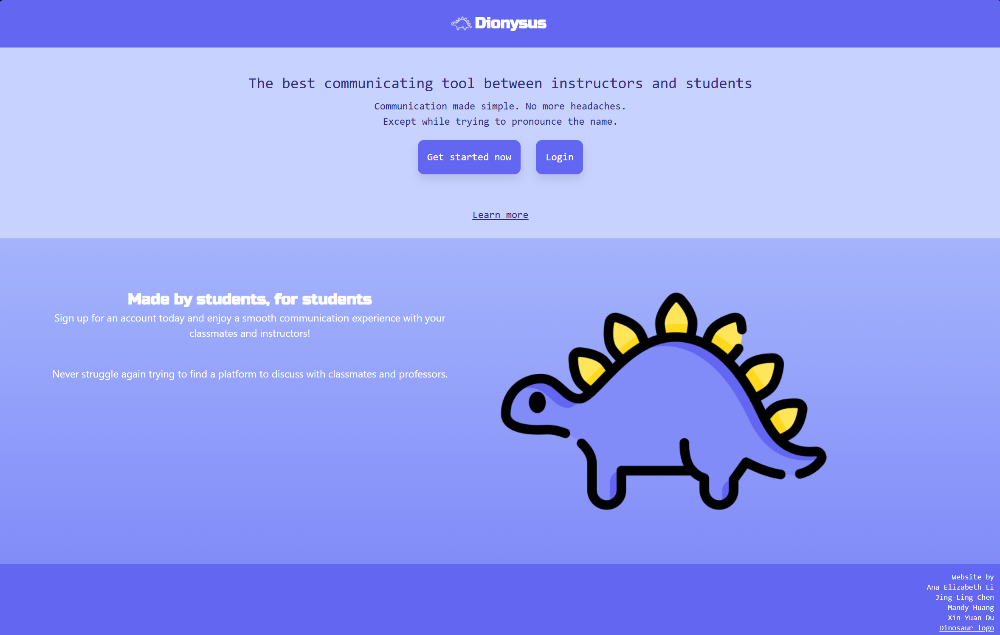
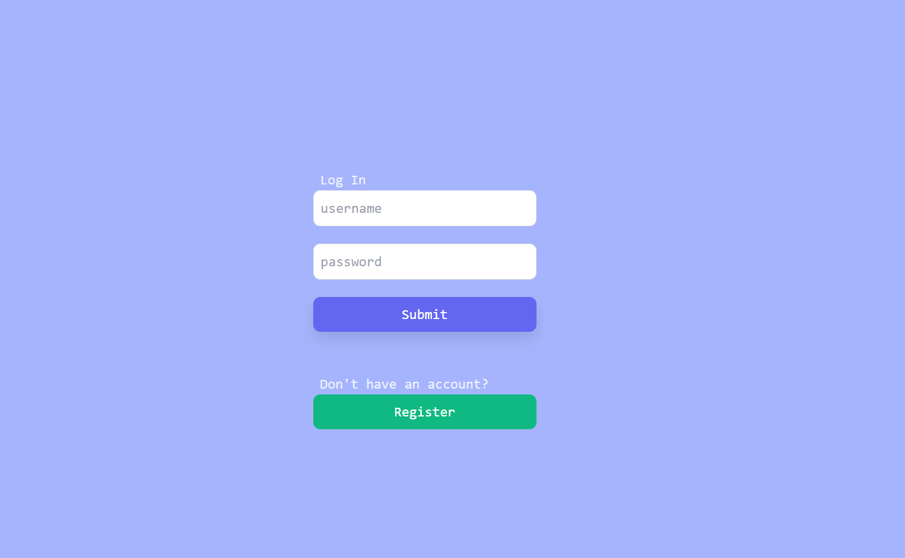
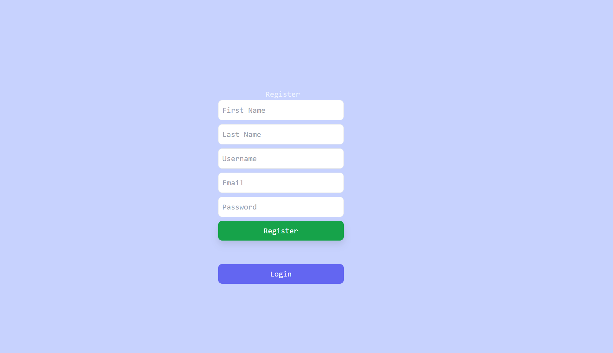
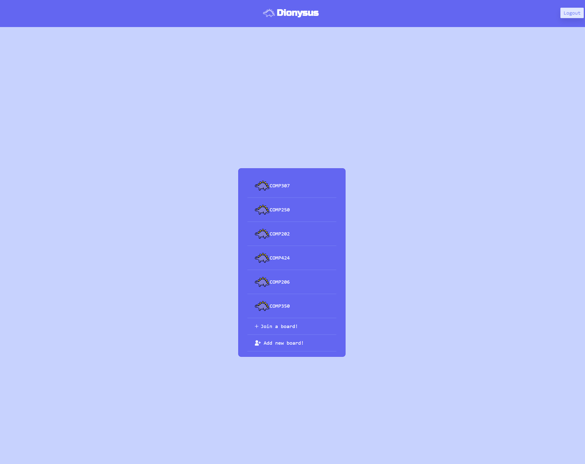
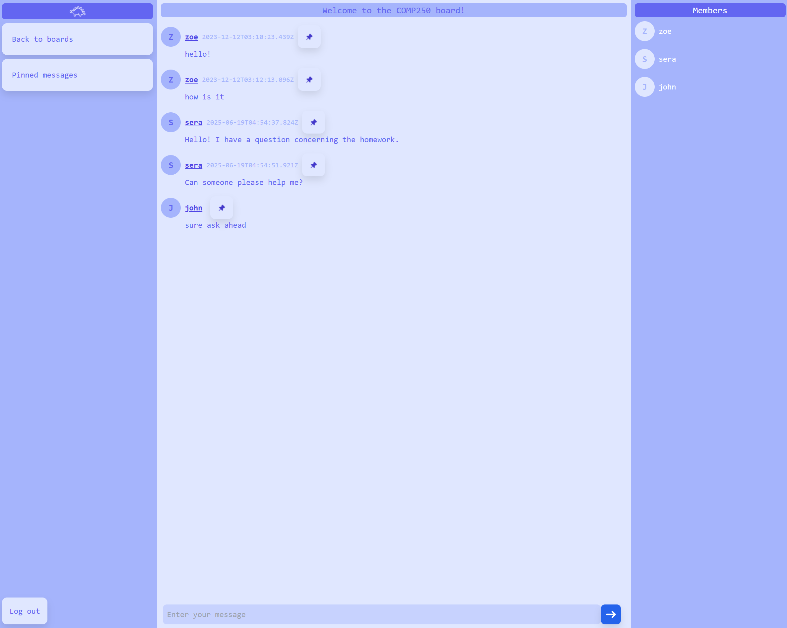

Showcase





Context
This was the final project for our web development class. We worked as a team of 4 to bring this messaging app to life, from idea to conception.
Introduction
Dionysus is a messaging app meant to ease communication between student and teaching staff. With a simple interface, it allows users to easily get stuff done. You can keep all your classes organized with the help of the channels function. Keep all important messages at glance's reach by pinning them.
Challenges
One of the many challenges encounterered during this project was the tight schedule we had to follow. This was especially difficult as members were also juggling with other coursework.